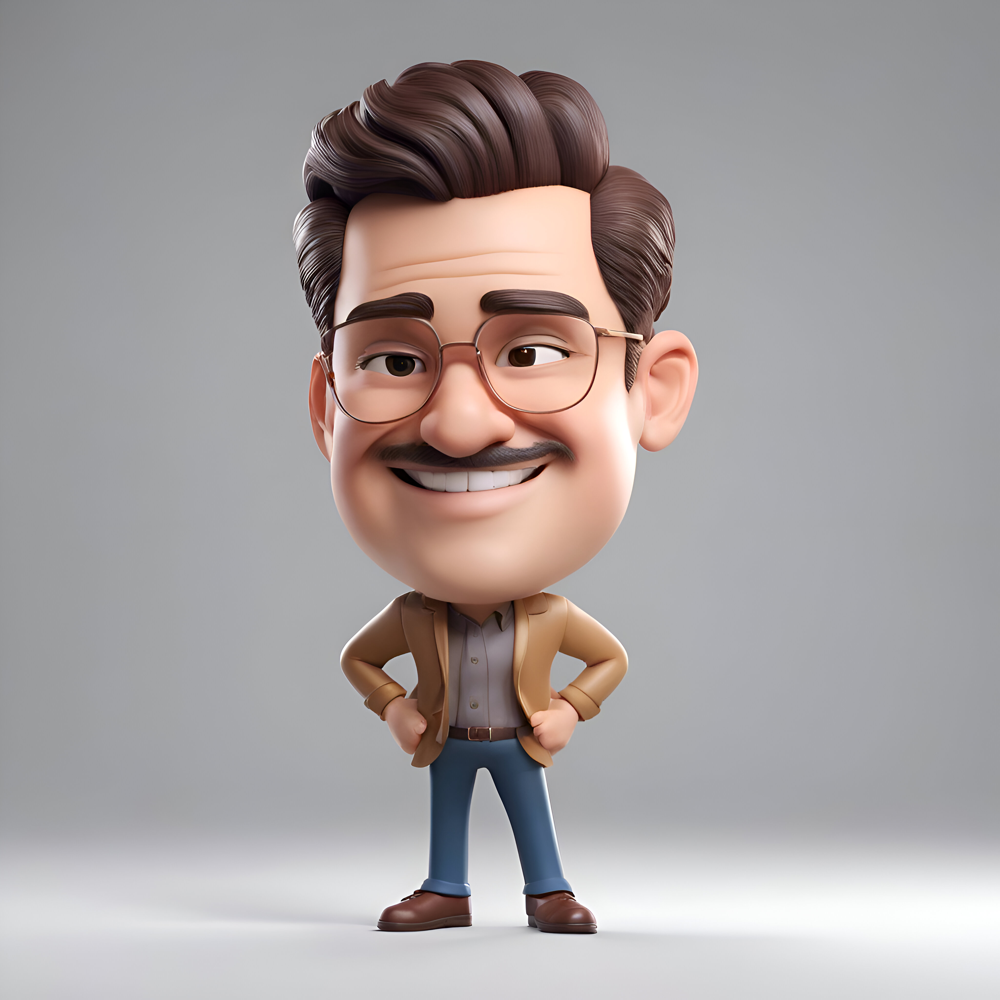

Aidyn Sautkali
Web Development learner and math teacher in Taldykorgan
Education:
- IITU, RET, 2014-2017
- SDU, MATH, 2021-2023
Experience:
- Specialized Lyceum No. 24 named after Mukhtar Aryn of Taldykorgan, 2023-2024 y. (Math teacher)
- Nazarbayev Intellectual school of Physics and Mathematics in Taldykorgan, 2024-current time. (Math teacher)
Skills:
Awards: